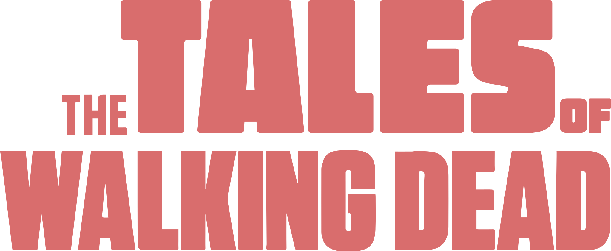
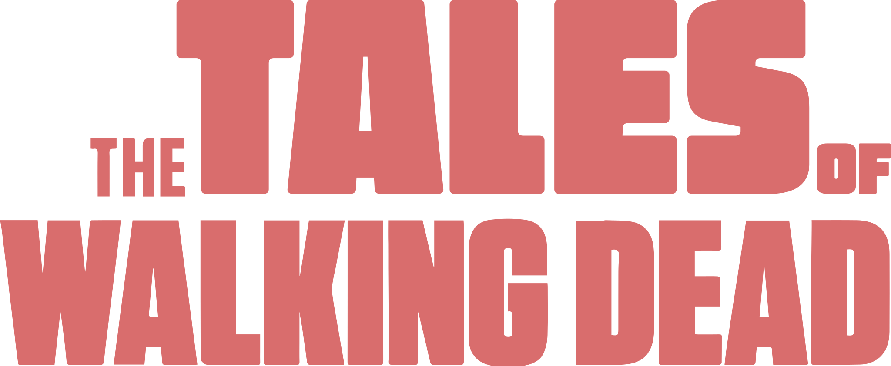

TWD Daryl Dixon
8.2 (13.548)
Un grupo de supervivientes de una extraña epidemia que convierte a los humanos en zombis recorre Estados Unidos. La expedición, liderada por el policía Rick Grimes, busca un lugar seguro para establecerse e investigar el origen del fenómeno.


 
